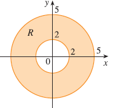

A region R is shown. Decide whether to use polar coordinates or rectangular coordinates and write \(\iint_R f(x, y) dA\) as an iterated integral, where \(f\) is an arbitrary continuous function on R.
